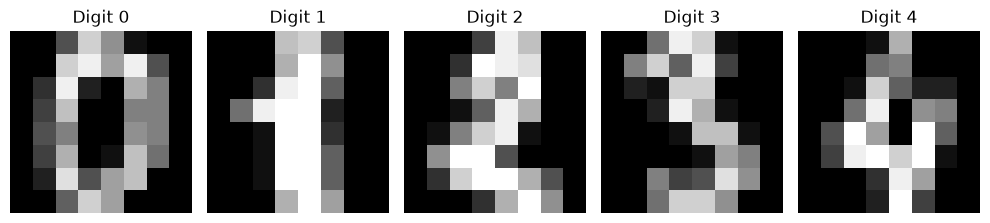
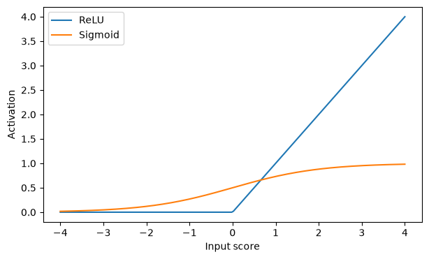
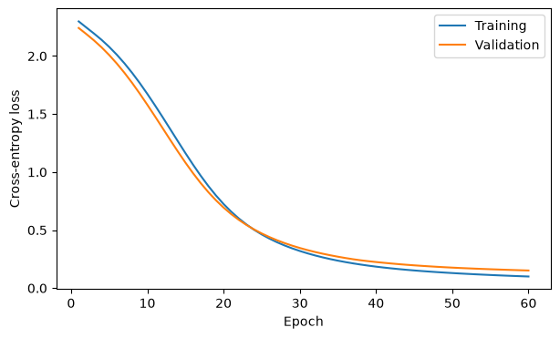
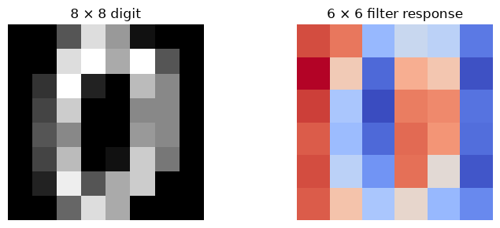

5.8. Modern Machine Learning 🧠#
Week 8 · November 2, 2026
In previous chapters we supplied measurements such as house size or listening hours. But how do we turn a photo, a sentence, or a recording into useful features? Modern machine learning often learns representations along with the prediction rule.
This chapter follows the Week 8 lecture: neural networks → deep learning → NLP and transformers → computer vision. Lab 07 puts the first part into practice by classifying handwritten digits with a small multilayer perceptron (MLP).
By the end, you should be able to:
Describe a neuron, activation function, hidden layer, and output layer.
Explain forward passes, loss, backpropagation, and parameter updates.
Distinguish tokens, embeddings, contextual representations, and generated outputs.
Compare MLPs, CNNs, and vision transformers.
Explain pretraining, transfer learning, and the need for honest evaluation.
Run the examples from top to bottom. They use small arrays and the digits dataset bundled with scikit-learn; there are no model-weight or dataset downloads.
5.8.1. Setup#
The examples use NumPy, pandas, matplotlib, scikit-learn, and PyTorch, matching Lab 07. If needed, install the missing packages in your notebook environment, restart the kernel, and rerun from the top.
# Run only if needed:
# %pip install numpy pandas matplotlib scikit-learn torch
import numpy as np
import pandas as pd
import matplotlib.pyplot as plt
import torch
from torch import nn
from sklearn.datasets import load_digits
from sklearn.model_selection import train_test_split
from sklearn.linear_model import LogisticRegression
from sklearn.metrics import accuracy_score
from IPython.display import display
SEED = 42
np.random.seed(SEED)
torch.manual_seed(SEED)
torch.set_num_threads(1)
plt.rcParams.update({'figure.figsize': (7, 4)})
5.8.2. Part 1: From Pixels to Neurons#
5.8.2.1. 1.1 What does a model see?#
A computer sees an image as numbers: one intensity per pixel for a grayscale image, or usually three color-channel values per pixel for a color image. MNIST, discussed in lecture, has 28 × 28 grayscale images. For a quick CPU example, we use scikit-learn’s smaller digits dataset: 1,797 images, each 8 × 8, with pixel values from 0 to 16.
Flattening an image produces 64 input features. A linear classifier can assign one weight to each pixel for each class. A neural network can instead learn intermediate combinations of pixels and then combine those features to classify the image.
digits = load_digits()
X_pixels = digits.data / 16.0
y_digits = digits.target
fig, axes = plt.subplots(1, 5, figsize=(10, 2.5))
for i, ax in enumerate(axes):
ax.imshow(digits.images[i], cmap='gray', vmin=0, vmax=16)
ax.set_title(f'Digit {y_digits[i]}')
ax.axis('off')
plt.tight_layout()
plt.show()
print('Images:', digits.images.shape, '→ Feature matrix:', X_pixels.shape)

Images: (1797, 8, 8) → Feature matrix: (1797, 64)
5.8.2.2. 1.2 A neuron: weighted sum, bias, activation#
A neuron computes
Weights determine how the inputs contribute to the score.
The bias shifts the score, changing when the unit activates.
The activation function transforms the score. ReLU keeps positive values and replaces negative values with zero. Sigmoid maps scores into (0, 1). GeLU is a smooth activation used in many transformer networks.
A single neuron can respond to a learned input pattern. A layer contains many neurons, each with its own weights and bias.
inputs = np.array([0.2, 0.8, 0.4])
weights = np.array([1.0, -0.5, 0.75])
bias = -0.1
z = inputs @ weights + bias
print('Weighted sum + bias:', round(z, 3), '| ReLU output:', max(0, z))
scores = np.linspace(-4, 4, 200)
plt.plot(scores, np.maximum(0, scores), label='ReLU')
plt.plot(scores, 1 / (1 + np.exp(-scores)), label='Sigmoid')
plt.xlabel('Input score'); plt.ylabel('Activation'); plt.legend()
plt.show()
Weighted sum + bias: 0.0 | ReLU output: 2.7755575615628914e-17

5.8.2.3. 1.3 Why stack layers?#
An MLP has an input layer, one or more hidden layers, and an output layer. Hidden activations are learned features. With 64 pixels, 32 hidden units, and 10 classes, the shapes are:
(batch, 64) → Linear → (batch, 32) → ReLU → Linear → (batch, 10)
The final ten numbers are logits, unrestricted class scores. The largest score supplies the predicted digit. A softmax can turn the scores into probabilities, but PyTorch’s cross-entropy loss takes logits directly.
Without nonlinear activations, stacking linear layers and biases still produces a single affine transformation. Extra depth alone would not add nonlinear decision boundaries.
network = nn.Sequential(nn.Linear(64, 32), nn.ReLU(), nn.Linear(32, 10))
example_batch = torch.tensor(X_pixels[:5], dtype=torch.float32)
logits = network(example_batch)
print(network)
print('Output shape:', tuple(logits.shape))
print('Predicted classes before training:', logits.argmax(dim=1).tolist())
print('Parameters:', sum(p.numel() for p in network.parameters()))
Sequential(
(0): Linear(in_features=64, out_features=32, bias=True)
(1): ReLU()
(2): Linear(in_features=32, out_features=10, bias=True)
)
Output shape: (5, 10)
Predicted classes before training: [4, 3, 3, 6, 3]
Parameters: 2410
5.8.2.3.1. ✏️ Quick Check#
Why do we need an activation between the linear layers?
What does a hidden layer with 32 units output for one image?
Are ten logits the same thing as ten probabilities?
Click for answers
Nonlinearity lets the model represent relationships beyond one affine transformation.
A vector of 32 learned feature activations.
No. Logits are unrestricted scores; probabilities must be nonnegative and sum to one.
5.8.3. Part 2: How Neural Networks Learn#
5.8.3.1. 2.1 The training cycle#
Forward pass: send a batch through the network to obtain logits.
Loss: compare predictions with the known labels. Cross-entropy penalizes assigning little probability to the correct class.
Backpropagation: apply the chain rule to compute how the loss changes with each parameter. It computes gradients; it does not itself update the parameters.
Optimizer step: use those gradients to update weights and biases. A learning rate controls the update scale. Adam also adapts updates using accumulated gradient information.
Repeat over batches. One epoch is a pass through the training set.
Call optimizer.zero_grad() before the next backward pass: PyTorch otherwise accumulates gradients. Differentiable operations allow gradients to flow through the layers. ReLU is not differentiable exactly at zero; frameworks use a convention there.
5.8.3.2. 2.2 Training, validation, and test still matter#
Use training data to learn parameters, validation data to select widths, learning rates, or stopping points, and test data for final evaluation. Larger models may fit training data better while generalizing worse. A neural network is not automatically better than a simpler baseline.
This worked example trains one fixed architecture on training data and monitors validation loss. Lab 07 adds a width comparison and a final held-out test evaluation.
X_dev, X_test, y_dev, y_test = train_test_split(
X_pixels, y_digits, test_size=0.20, random_state=SEED, stratify=y_digits)
X_train, X_val, y_train, y_val = train_test_split(
X_dev, y_dev, test_size=0.25, random_state=SEED, stratify=y_dev)
train_X = torch.tensor(X_train, dtype=torch.float32)
train_y = torch.tensor(y_train, dtype=torch.long)
val_X = torch.tensor(X_val, dtype=torch.float32)
val_y = torch.tensor(y_val, dtype=torch.long)
print('Train / validation / test:', len(y_train), len(y_val), len(y_test))
# Scaling by the known upper bound 16 does not fit statistics on held-out data.
Train / validation / test: 1077 360 360
torch.manual_seed(SEED)
model = nn.Sequential(nn.Linear(64, 32), nn.ReLU(), nn.Linear(32, 10))
criterion = nn.CrossEntropyLoss()
optimizer = torch.optim.Adam(model.parameters(), lr=0.01)
train_losses, val_losses = [], []
for epoch in range(60):
model.train()
optimizer.zero_grad()
logits = model(train_X)
loss = criterion(logits, train_y)
loss.backward()
optimizer.step()
train_losses.append(loss.item())
model.eval()
with torch.no_grad():
val_losses.append(criterion(model(val_X), val_y).item())
plt.plot(range(1, 61), train_losses, label='Training')
plt.plot(range(1, 61), val_losses, label='Validation')
plt.xlabel('Epoch'); plt.ylabel('Cross-entropy loss'); plt.legend()
plt.show()
with torch.no_grad():
val_pred = model(val_X).argmax(dim=1).numpy()
print('MLP validation accuracy:', round(accuracy_score(y_val, val_pred), 3))
linear_baseline = LogisticRegression(max_iter=1000).fit(X_train, y_train)
print('Logistic regression validation accuracy:', round(linear_baseline.score(X_val, y_val), 3))

MLP validation accuracy: 0.953
Logistic regression validation accuracy: 0.972
The example uses one full training batch per epoch for clarity. Lab 07 uses mini-batches and a smaller learning rate. model.eval() changes the behavior of layers such as dropout; torch.no_grad() turns off gradient tracking during evaluation. They serve different purposes.
If training loss falls while validation loss rises, the model may be overfitting. Possible responses include collecting better data, using a smaller network, regularization, or early stopping chosen using validation data. Do not repeatedly inspect test accuracy to guide these decisions.
5.8.3.3. 2.3 What makes learning “deep”?#
Deep learning uses multiple layers of trainable transformations to learn representations. MLP layers, convolutions, and attention provide different ways to combine inputs. One loss can train the layers together end to end.
Depth can help learn complex patterns, but representations are not guaranteed to become clearer or more useful at every layer. Deep networks can also memorize data, require substantial compute, and be difficult to interpret. There is no universal minimum number of examples per class: needs depend on the task, model, labels, and prior training.
5.8.3.4. 2.4 Pretraining and transfer learning#
Pretraining learns parameters on a broad dataset. Transfer learning reuses those parameters for another task, either by freezing the feature extractor and training a small prediction head, or by fine-tuning some or all weights.
For a hospital with 500 labeled X-rays, training a large network from scratch would usually be a poor starting point. A suitable pretrained model may help, but medical use still requires careful validation, representative data, and expert review. Transfer learning reduces data needs; it does not establish reliability by itself.
5.8.3.4.1. ✏️ Quick Check#
Which step computes gradients, and which changes the parameters?
Can the highest training accuracy choose the best hidden-layer width?
What can transfer learning reuse?
Click for answers
Backpropagation computes gradients; the optimizer updates parameters.
No. Select the width using validation performance and reserve the test set.
Learned feature-extractor weights, with a new head or further fine-tuning.
5.8.4. Part 3: NLP — Turning Language into Vectors#
5.8.4.1. 3.1 Tokens and numerical representations#
Natural language processing (NLP) works with text: classification, search, translation, or generation. Text has context and order: “the cat chased the mouse” differs from “the mouse chased the cat.”
A tokenizer divides text into units. Tokens may be characters, words, or subword pieces. Modern language models commonly use subwords; token boundaries and token counts depend on the tokenizer. A token ID is an index, not a meaningful numerical measurement.
Representation |
What it stores |
Main limitation |
|---|---|---|
One-hot token vector |
One vocabulary position is 1; the rest are 0 |
Sparse; no learned similarity |
Bag of words |
Counts per vocabulary word in a document |
Discards word order |
Static word embedding |
A learned dense vector per word |
Same vector in every context |
Contextual representation |
A vector updated using surrounding tokens |
More computation; context is bounded |
Embeddings can encode useful similarities learned from data, along with biases and other unwanted associations. Nearby vectors do not necessarily mean two items are interchangeable.
sentences = ['the cat chased the mouse', 'the mouse chased the cat']
vocabulary = sorted(set(' '.join(sentences).split()))
counts = np.array([[sentence.split().count(word) for word in vocabulary]
for sentence in sentences])
display(pd.DataFrame(counts, index=sentences, columns=vocabulary))
print('Bag-of-words vectors are identical:', np.array_equal(counts[0], counts[1]))
| cat | chased | mouse | the | |
|---|---|---|---|---|
| the cat chased the mouse | 1 | 1 | 1 | 2 |
| the mouse chased the cat | 1 | 1 | 1 | 2 |
Bag-of-words vectors are identical: True
5.8.4.2. 3.2 Comparing embeddings#
For nonzero vectors, cosine similarity compares direction:
Cosine values range from −1 to 1. A value of 0 means orthogonal vectors, not a universal guarantee of unrelated meanings. Dot product depends on direction and magnitude. Euclidean distance measures straight-line separation. The best measure depends on how the representation was trained.
The following vectors are handmade teaching examples, not embeddings learned from a language model.
toy_vectors = {'cash': np.array([1.0, 0.1]),
'money': np.array([0.9, 0.2]),
'river': np.array([0.1, 1.0])}
def cosine(a, b):
return (a @ b) / (np.linalg.norm(a) * np.linalg.norm(b))
for word in ['money', 'river']:
print(f"cash / {word}: {cosine(toy_vectors['cash'], toy_vectors[word]):.3f}")
cash / money: 0.993
cash / river: 0.198
5.8.5. Part 4: Attention and Transformers#
5.8.5.1. 4.1 Context changes the representation#
In “I got cash from the bank,” cash helps identify the meaning of bank. In “I sat on the river bank,” river supplies different context. Attention lets a token mix information from other tokens using weights computed from their representations.
In one attention head:
A query describes what a token is looking for.
Keys determine how well other tokens match that query.
Values provide the information to mix.
Learned linear projections create Q, K, and V from the input vectors. For key dimension \(d_k\),
The softmax is applied row by row, making each query’s weights sum to one. This is a mechanism for combining information, not proof that attention weights fully explain a model’s decision.
# Tiny numerical example, not a pretrained language model.
Q = np.array([[1., 0.], [0., 1.], [1., 1.]])
K = np.array([[1., 0.], [0., 1.], [1., 1.]])
V = np.array([[1., 2.], [3., 0.], [2., 4.]])
scores = Q @ K.T / np.sqrt(K.shape[1])
exp_scores = np.exp(scores - scores.max(axis=1, keepdims=True))
attention_weights = exp_scores / exp_scores.sum(axis=1, keepdims=True)
context_vectors = attention_weights @ V
display(pd.DataFrame(attention_weights, columns=['Token 1', 'Token 2', 'Token 3']).round(3))
print('Row sums:', attention_weights.sum(axis=1))
print('Context-aware mixtures:', context_vectors.round(3))
| Token 1 | Token 2 | Token 3 | |
|---|---|---|---|
| 0 | 0.401 | 0.198 | 0.401 |
| 1 | 0.198 | 0.401 | 0.401 |
| 2 | 0.248 | 0.248 | 0.503 |
Row sums: [1. 1. 1.]
Context-aware mixtures: [[1.797 2.407]
[2.203 2. ]
[2. 2.51 ]]
5.8.5.2. 4.2 Positions and architecture types#
Attention alone does not encode sequence position. Transformers add position information to distinguish different arrangements of the same tokens. A transformer block combines attention with an MLP and supporting operations such as residual connections and normalization. Multiple attention heads can learn different relationships.
Architecture |
Available context |
Typical task |
|---|---|---|
Encoder, such as BERT |
Tokens can attend in both directions |
Classification, tagging, retrieval |
Decoder, such as GPT |
Causal attention to current and earlier positions |
Next-token generation |
Encoder–decoder |
Encoder reads input; decoder attends to input and earlier outputs |
Translation |
A causal mask prevents a decoder from seeing future tokens during training. It can process positions in parallel during training while still respecting this constraint. Generation proceeds one new token at a time.
5.8.5.3. 4.3 Language models and autoregression#
A language model estimates P(next token | previous tokens). To generate, repeatedly predict or sample a token, append it to the context, and predict again. This is autoregressive generation.
Pretraining commonly uses next-token prediction for decoder language models. Inference uses learned weights to produce outputs; it does not normally update the weights. A large language model’s fluent text can still be incorrect: generating plausible continuations does not verify facts.
Standard full attention compares token pairs, so its attention matrix grows quadratically with sequence length. Context windows and compute limit how much text a model can process at once.
5.8.5.3.1. ✏️ Quick Check#
Why does bag of words miss the difference between the cat/mouse sentences?
What makes a contextual embedding different from a static one?
Why mask future tokens in a decoder?
Click for answers
The word counts match; word order was discarded.
Its representation depends on the surrounding tokens.
To prevent future-token information leaking into a next-token prediction.
5.8.6. Part 5: Computer Vision#
5.8.6.1. 5.1 Why use image structure?#
Lab 07’s MLP flattens each image. This works on a small dataset, but the network must learn relationships among individual input positions without a built-in notion of neighboring pixels.
A 224 × 224 RGB image has 150,528 input values. Connecting all of them to just 1,000 hidden units requires over 150 million weights. An image shifted slightly also places its edges at different input positions.
5.8.6.2. 5.2 Convolutional neural networks (CNNs)#
A convolution slides a small learned filter across local image regions. The same weights are reused at each position, creating a feature map. One filter can respond to the same local pattern in many places. Pooling or strided operations reduce spatial size; deeper layers can combine information from larger regions.
Early filters often respond to edges and simple textures, while later layers may respond to combinations useful for the task. This interpretation is an intuition, not a promise that every unit has a neat human-readable meaning.
The next example uses a fixed edge filter to illustrate the operation. Real CNNs learn their filter weights.
image = torch.tensor(digits.images[0] / 16.0, dtype=torch.float32)[None, None, :, :]
edge_filter = torch.tensor([[-1., 0., 1.], [-1., 0., 1.], [-1., 0., 1.]])[None, None, :, :]
feature_map = torch.nn.functional.conv2d(image, edge_filter)
fig, axes = plt.subplots(1, 2, figsize=(8, 3))
axes[0].imshow(image[0, 0], cmap='gray'); axes[0].set_title('8 × 8 digit')
axes[1].imshow(feature_map[0, 0], cmap='coolwarm'); axes[1].set_title('6 × 6 filter response')
for ax in axes: ax.axis('off')
plt.tight_layout(); plt.show()
print('One 3 × 3 filter uses 9 shared weights.')

One 3 × 3 filter uses 9 shared weights.
5.8.6.3. 5.3 From ImageNet to vision transformers#
ImageNet supplied a large labeled image benchmark. AlexNet’s 2012 competition result showed the strength of deep CNNs trained with GPUs. Subsequent systems built on learned visual representations and pretrained backbones.
A vision transformer (ViT) divides an image into patches, maps each patch to an embedding, adds position information, and processes the resulting token sequence with transformer blocks. Patch size is an architectural choice; it is not always 16 × 16.
Model |
How it combines inputs |
Useful intuition |
|---|---|---|
MLP |
Dense connections among flattened features |
No built-in spatial neighborhoods |
CNN |
Shared filters over local neighborhoods |
Strong locality and weight-sharing assumptions |
ViT |
Attention among patch tokens |
Can model relationships across distant patches |
CNNs often work well with less data because of their structural assumptions. ViTs can scale well with large datasets and pretraining. Performance still depends on the architecture, data, and training procedure.
5.8.6.4. 5.4 One backbone, different tasks#
A pretrained backbone extracts representations. A task-specific head turns them into outputs: an image class, object boxes, or a segmentation label per pixel. Transfer learning adapts the representation or head to a new dataset.
A classifier trained on centered grayscale digits may fail on phone photographs with shadows, color, or distracting backgrounds. This distribution shift is why a high held-out score on one dataset does not guarantee real-world performance.
5.8.7. Part 6: Connecting Images, Language, and Actions#
The lecture closes with a shared idea: different inputs can be represented as vectors and processed together.
CLIP learns image and text encoders with a contrastive objective: matching image–caption pairs should have compatible representations. Comparing image embeddings with candidate text embeddings supports retrieval or zero-shot classification. CLIP itself is not a caption-generating language model.
A vision-language model (VLM) connects visual representations with a language model so it can respond to image-and-text inputs. The mapping between the vision encoder and language model is trained; image pixels do not become ordinary word tokens by themselves.
A vision-language-action model (VLA) uses visual and language context to produce actions or action representations, such as robot motion. Acting in an environment requires evaluation beyond text accuracy.
The shared pipeline is input → representation → processing → task output. Architecture and training objectives determine what those representations are useful for.
5.8.7.1. ✏️ Quick Check#
Why does a convolution need fewer weights than a dense layer over the whole image?
What are the tokens in a ViT?
How does CLIP differ from a model that writes image captions?
Click for answers
It uses small local filters and shares each filter’s weights across positions.
Embedded image patches, with position information (and sometimes special tokens).
CLIP compares image/text representations; caption generation requires a generative output mechanism.
5.8.8. Chapter Summary#
A neuron combines inputs with weights and a bias, then applies an activation. Networks stack these transformations to learn representations. Backpropagation computes gradients; an optimizer updates the parameters. Validation and test discipline still apply, and simpler baselines remain useful.
For language, tokenization defines the input units, embeddings provide vectors, and attention mixes context. Transformers use position information and architecture-specific masks. Decoder language models generate autoregressively.
For vision, CNNs share local filters, while ViTs process patch tokens with attention. Pretraining can make learned representations useful with fewer task-specific labels. CLIP, VLMs, and VLAs connect representations across modalities.
Connection to Lab 07: prepare digit pixels, define a Linear–ReLU–Linear MLP, train with cross-entropy, choose a width using validation accuracy, compare baselines on the test set, and inspect mistakes. Optional sections visualize hidden embeddings with PCA and connect them to language and vision architectures.